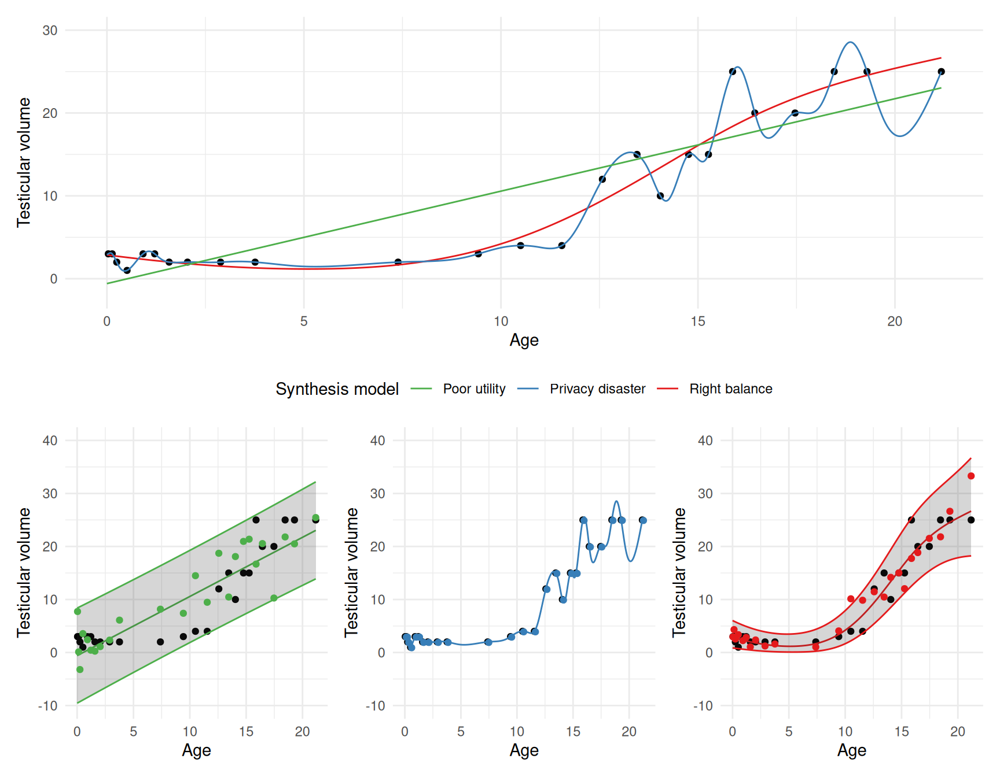

data <- readRDS(
url("https://github.com/lmu-osc/synthetic-data-tutorial/raw/refs/heads/main/data/boys.RDS")
)
data_subset <- data[,c("age", "hgt", "wgt")]Synthetic data: The general idea
Synthetic data: What it is and what it is about?
The idea of synthetic data has first been proposed independently in 1993 by Donald B. Rubin and Roderick J.A. Little, who are known as members of the founding fathers of modern missing data theory (Rubin 1993; Little 1993). Both proposed, albeit in slightly different ways, to not release the original data, but replace values from the original data with values drawn from some model. That is, synthetic data is nothing more than generated data, and is occasionally called simulated data, digital twins or even fake data. This model can be specified independent of the data at hand, but typically it is estimated on a data set. Moreover, the model can range from very simple (e.g., a set of values with attached probabilities) to extremely complex (e.g., a neural network with billions of parameters). Whatever model is used, it is essential that new samples can be generated from it. These newly drawn samples can then be released to the public, as a surrogate dataset that mimics the original data statistically.
In what follows, we assume that there is a observed data set, \(X\), consisting of \(n\) observations measured on \(p\) variables. Furthermore, we assume that these observations adhere to some structure that we can encode in the joint distribution of the variables, \(f(X)\). If we would know this distribution, we could sample new observations from it directly, but we typically do not know this. However, we can estimate this joint distribution, leading to \(\hat{f}(X)\), and sample new observations from this.
Modelling synthetic data
How to estimate this joint distribution is essentially a question of how to specify the synthetic data model. If our model approximates the true data generating process reasonably well, we can expect fairly high quality synthetic data. To be a bit more precise, this means that both univariate and multivariate patterns of the observed data are preserved in the synthetic data: the univariate characteristics of the variables are thus preserved, but also relationships between variables are captured in the synthetic data. Moreover, if we model \(f(X)\) accurately and draw new samples from this model, our data should be protected sufficiently well, because many real-world processes are far from deterministic. These random fluctuations typically provide sufficient uncertainty to prevent both identity and attribute disclosure. In what follows, we describe the two strategies that have emerged to estimate \(\hat{f}(x)\) and draw samples from it.
Joint modelling
One approach to modelling synthetic data, is by estimating the multivariate distribution of the data directly, and use this single joint model to draw values for all variables simultaneously. We can, for example, model the distribution of the data using a normal approximation. That is, we estimate the means and covariances of the variables in the data, assume normality, and generate synthetic samples from this normal distribution. For many data sets, however, this normal approximation provides a poor fit.
In the past decade, deep learning has become popular for the generation of synthetic data. An advantage of these methods, in particular generative adversarial networks (GANs) and variational auto-encoders (VAEs), is that they do not assume a particular parametric distribution (like the normal approximation we just discussed). Rather, these methods attempt to learn the distribution of the data, by transforming relatively simple input data in a way that resembles the observed data. While these methods can achieve state-of-the-art performance, extensive tuning is often required to achieve this performance. Moreover, tuning these models such that they produce realistic synthetic data is non-trivial and often performed in an ad hoc fashion, subsantially lowering user-friendliness.
Fully conditional specification
A second strategy is to break the joint distribution of the data into a series of conditional distributions, one for each variable (or a block of variables). That is, we can factor the joint distribution of the data into a series of conditionals \[ f(X) = f_1(X_1) f_2(X_2|X_1) \dots f_p(X_p|X_1, \dots X_{p-1}), \] which greatly simplifies the modelling task. That is, rather than specifying the joint distribution, we can model the distribution of each variable separately, somewhat akin to specifying a good prediction model, but with the addition of reasonable assumptions for the noise. In practice, we might proceed as follows.
- Starting from the first variable, we specify a distribution that provides a reasonable approximation to the distribution of the data at hand.
- For the second variable, we specify a prediction model that predicts this variable on the basis of the first, and combine this model with a distribution for the residual variance. If we would use, for example, a linear regression model with normally distributed errors, we fit a regression model with the first variable as predictor and the second variable as outcome. This model is used to predict the second variable from the first in the synthetic data, after which the variance is added by drawing random errors from a normal distribution with mean zero and variance equal to the residual variance of the fitted model.
- For the third variable, we can use a prediction model based on the first two variables, and so on, until all variables are synthesized.
Note that, although in theory the order of synthesis should not matter much, in practice it may make a difference in some cases. We will come back to this issue and provide some concrete advice in the next section.
Fully conditional specification has two distinct advantages over joint modelling: 1. It allows great flexibility, because a different model can be used for each variable. That is, this linear model can be combined with or replaced by non-linear (e.g., non-parametric) models that capture non-linear relationships (or non-normal error terms). 2. Traditional model evaluation techniques, such as regression diagnostics and posterior predictive checks can be used directly (see the relevant vignette from the performance package for a practical introduction), and potential improvements can be readily incorporated into the synthesis model.1 For example, if a model with a linear relationship between two variables yields a poor fit, a non-linear relationship can be easily incorporated in the synthesis model.
In what follows, we focus on synthesis methods that employ this conditional modelling strategy (commonly called fully conditional specification or sequential regression).
Exercise: A simple synthetic data model
The following exercise is purely illustrational. In practice, we don’t write our synthesis code from scratch, but we use dedicated R packages to generate synthetic data. However, this section describes how such packages work under the hood, and a basic understanding of this will be helpful for specifying and improving the synthesis models. The related code is not essential, but try to understand the general workflow. In the next section, we will use the synthpop package to achieve similar results.
Additional resources
There is, of course, much more to say about specifying synthesis models that we cannot cover all in these materials. However, if you wish to learn more about specifying joint models for creating synthetic data, you might find the following resources helpful.
- Murray (2018) (section 6.1): Focuses on specifying joint models for multiple imputation of missing data, but the idea transfers directly to generation of synthetic data (that is, we assume that the missing data occurs in \(n_{syn}\) new samples that are fully missing, or we overimpute the observed data).
- Chollet, Kalinowski, and Allaire (2022) (chapter 12): On deep learning for the generation of synthetic data.
- Volker (2025): Easy and primarily illustrative introduction on generating (simple) synthetic data based on GANs in
R.
If you are interested in any additional resources on fully conditional specification, the following papers might be informative.
To get a flavour of the two modelling approaches, you will show that it is indeed possible to model a joint distribution as a series of conditionals. For this exercise (and all exercises in subsequent sections), we will use the boys data from the R-package mice,2 and for the time being, we focus on the first three variables age, hgt and wgt. You can obtain the data as follows:
Description of the
boys data
The boys data contains measurements on 9 variables on 748 Dutch boys. The variables in the data are described below, as well as the first six observations.
age: Decimal age (0-21 years)hgt: Height (cm)wgt: Weight (kg)bmi: Body mass indexhc: Head circumference (cm)gen: Genital Tanner stage (G1-G5)phb: Pubic hair (Tanner P1-P6)tv: Testicular volume (ml)reg: Region (north, east, west, south, city)
head(data) |>
knitr::kable(digits = 2) |>
kableExtra::kable_styling(bootstrap_options = c("striped", "hover"))| age | hgt | wgt | bmi | hc | gen | phb | tv | reg |
|---|---|---|---|---|---|---|---|---|
| 0.04 | 50.1 | 3.65 | 14.54 | 33.7 | G3 | P4 | 3 | south |
| 0.04 | 53.5 | 3.37 | 11.77 | 35.0 | G2 | P3 | 2 | south |
| 0.06 | 50.0 | 3.14 | 12.56 | 35.2 | G2 | P3 | 2 | south |
| 0.06 | 54.5 | 4.27 | 14.37 | 36.7 | G2 | P1 | 1 | south |
| 0.06 | 57.5 | 5.03 | 15.21 | 37.3 | G1 | P2 | 2 | south |
| 0.07 | 55.5 | 4.66 | 15.11 | 37.0 | G1 | P2 | 1 | south |
We start by applying the joint modelling strategy on the boys data. For simplicity, we draw synthetic samples by approximating the multivariate distribution of age, hgt and wgt using a three-variate normal distribution, using the means of these variables and their variance-covariance matrix obtained from the observed data. To generate these synthetic samples, we use the R-package mvtnorm (Genz and Bretz 2009).
Applying joint modelling in practice
1. Load the R-package mvtnorm using the function library().
Show code: Loading mvtnorm
library(mvtnorm)2. Store the means and variance covariance matrix of the just created subset of the boys data.
Code
means <- colMeans(data_subset)
varcov <- var(data_subset)3. Create your first synthetic data set by calling the function rmvnorm() from the mvtnorm package to sample new observations from a multivariate normal distribution. Set the sample size equal to \(n = 748\), and use the stored mean-vector and variance-covariance matrix.
Note: You may set a seed here for reproducibility (below, seed = 123 is used, but this is no better than any other seed).
Code
set.seed(123)
syn1 <- mvtnorm::rmvnorm(
n = nrow(data_subset),
mean = means,
sigma = varcov
)Synthetic data with fully conditional specification
We will now do the same thing, but with the fully conditional specification strategy outlined above. To do this, we need the regression models hgt ~ age and wgt ~ age + hgt fitted on the observed data. Moreover, we need the residual variances of each model.
4. Regress hgt on age and wgt on age and hgt, and store the results.
Code
hgtage <- lm(hgt ~ age, data = data_subset)
wgtagehgt <- lm(wgt ~ age + hgt, data = data_subset) 5. Now store the mean of the variable age with corresponding standard deviation.
Code
mean_age <- mean(data_subset$age)
sd_age <- sd(data_subset$age)Now, we have everything in place to start the synthesis process. We first generate the variable age, then hgt and then wgt.
6. Draw \(n_{syn} = 748\) samples from a normal distribution with mean equal to mean_age and standard deviation equal to sd_age.
Code
nsyn <- nrow(data_subset)
age_syn <- rnorm(
n = nsyn,
mean = mean_age,
sd = sd_age
)7. Use the synthetic age values to predict an equal number of hgt values, and add normal noise based on the residual standard deviation of the model fitted on the observed data.
Code
hgt_coefs <- coef(hgtage)
hgt_sd <- summary(hgtage)$sigma
hgt_syn <- hgt_coefs[1] + hgt_coefs[2] * age_syn + rnorm(nsyn, 0, hgt_sd)Comparing the results
8. Now, use the synthetic age and hgt values to predict an equal number of wgt values, and again add normal noise based on the residual standard deviation of the model fitted on the observed data.
Code
wgt_coefs <- coef(wgtagehgt)
wgt_sd <- summary(wgtagehgt)$sigma
wgt_syn <- wgt_coefs[1] + wgt_coefs[2] * age_syn + wgt_coefs[3] * hgt_syn +
rnorm(nsyn, 0, wgt_sd)9. Compare the means and variance-covariance matrices of the two synthetic data sets with the estimates from the observed data.
First, we calculate the means of the observed and synthetic variables.
Code
syn2 <- cbind(age_syn, hgt_syn, wgt_syn)
data.frame(
obs = means,
syn1 = colMeans(syn1),
syn2 = colMeans(syn2)
)These are all reasonably close! We subsequently compare the variances.
Code
varcov
var(syn1)
var(syn2)Also the variance covariance matrices are very close, as we would expect. However, these are the parameters that we specified, so these should be reasonably close, because anything else suggests a coding error. We can go further comparing the distributions of the variables, but we save that exercise for later.
Conclusion: Fully conditional specification versus joint modelling
Now you have a flavour of how the two modelling procedures allow to generate synthetic data. While in this specific example, the outcomes were essentially the same, this is not generally the case. That is, the combination of three conditional normal models with solely main effects is equivalent to a tri-variate normal distribution, but using fully conditional specification you can specify any model that you deem appropriate, even if this does not give rise to a well-defined multivariate probability distribution. As stated in Section 2, we can model a subset of the variables, or the entire data set using non-parametric models, and a different model can be specified for each variable. Because of this flexibility, and it’s presence in existing software, we will use the fully conditional specification strategy throughout. Before we get there, we discuss some additional considerations for generating synthetic data.
Specifying synthetic data models
Regardless of which approach to generating synthetic data you use, it is important that you specify an appropriate synthesis model. That is, \(\hat{f}(x)\) needs to model the true data distribution adequately. In general, synthetic data models can be misspecified in two ways.
- It can be that our model is far from accurate, because it misses important aspects of the underlying distribution. For example, we might select a model that does not capture the shape of some variables. We could also miss some important relationships between variables. In such cases, the synthetic data might not look like the observed data, and some analyses performed on the synthetic data might yield results that are far from those one would obtain running the same analyses on the observed data. That is, the synthetic data has low utility.
- It can also be the case that the model fits the data a bit too good. If the synthetic data model overfits, we risk that the observed data is reproduced when sampling from the synthetic data model, protecting privacy very poorly.
You might notice that also here the privacy-utility trade-off plays a major role: a simpler synthesis model typically leaks less information, but might also fail to capture more complex characteristics of the observed data.

For a better grasp of this privacy-utility trade-off, Figure 1 might be illuminating. The figure shows the relationship between age and testicular volume for a small subset of the boys data. It is quite clear that until approximately 10 years, testicular volume is very small and remains close to constant, after which it increases between 10 and 16 years, after which it tapers of again. Without going into the specifics of the applied models (although all are implemented using fully conditional specification), we consider the following three approaches to modelling this relationship:
- If we would model this using a linear model (the green line), and generate new samples from this (the green points in the left subplot on the second row), we see a relatively poor fit: some negative values occur, some values that are too large between age 5 and 10 and too many values relatively small after age 16. So, our synthetic data is not too realistic if we would use this model, and it can be argued that it has relatively low utility.
- If we would model the data with a very flexible model (the blue line, and blue points in the middle plot on the second row), we can achieve very high utility. In fact, we can reproduce the observed testicular volume values exactly from the observed age values (which can also be considered a form of overfitting). This poses a significant privacy threat, as knowing someones age allows to directly infer their testicular volume, which is information someone perhaps rather keeps private.
- The third figure on the bottom row shows a model that achieves a better balance: realistic synthetic data can be drawn from the model, but there is sufficient uncertainty, in the sense that synthetic data points (the red points) substantially deviate from the best fitting line, but still blend nicely with the observed data points. In this case, this is achieved by transforming
tvby taking its square-root (which substantially reduces the variance for the lowertvscores), and non-linear regression model (with a natural cubic spline basis, see?nsfor help if you are interested in this).
The bottom line is that you want a synthesis model to be simple enough to leave sufficient uncertainty with respect to the exact relationships between the variables. This substantially reduces disclosure risks, because this uncertainty renders it much more unlikely that real observations are reproduced by the synthetic data model, or that there occurs a deterministic relationship between variables. Simulaneously, specifying the relationships between variables accurately yields higher utility, which allows data users to do more useful analyses with the synthetic data. Hence, you want to balance data privacy with data utility.
Synthetic data for open science
The release of a synthetic data set for open science purposes should be guided by the privacy-utility trade-off, with respect to the data at hand. That is, one should consider the goals that should be attainable with the synthetic data, and what privacy risks are looming. From a utility perspective, this implies that researchers who intend to release synthetic data with their code, should consider what aims should be achievable with this data. Often, this depends on the analyses conducted with the real data.
For instance, for reproducing a regression analysis, means and covariances should be reproduced with reasonable accuracy, but preserving higher order moments (like skewness or kurtosis) or complex relationships might not be necessary. In such cases, one can thus suffice with a synthesis model that focuses on these aspects, even though the synthetic data deviates from the observed data in important aspects.
If the data ought to be used for novel research, including complex modelling, one should consider incorporating these complexities (such as higher-order moments or non-linearities) in the synthesis model. Typically, it is safe to assume that aspects of the data that are not modelled explicitly (e.g., interactions between variables, non-linear relationships, fat tails or even multi-level structure) will not appear in the synthetic data, although some exceptions are possible by choosing flexible synthesis models. Whatever procedure is followed to create the synthetic data, make sure to be transparent: researchers would love to know what your synthetic data set can and cannot be used for.
At the same time, synthetic data creators should evaluate potential disclosure risks. These risks should be evaluated at two distinct moment: before creating synthetic data one should decide what information must be protected, and after creating synthetic data, one should evaluate how well one actually protected that information. For example, some synthesis methods may simply reproduce original records. The privacy-utility trade-off hints at the idea that the more complex the synthesis model, the larger the risk of disclosure. As such, it is advisable to start with simple synthesis models, and add complexity only when necessary. Some measures of disclosure risk will be covered in the upcoming sections, but when in doubt, please consider Section 3.3 on Risk Assessment in the Handbook on Statistical Disclosure Control (Hundepool et al. 2024).
References
Buuren, S. Van, J. P. L. Brand, C. G. M. Groothuis-Oudshoorn, and D. B. Rubin. 2006. “Fully Conditional Specification in Multivariate Imputation.” Journal of Statistical Computation and Simulation 76 (12): 1049–64. https://doi.org/10.1080/10629360600810434.
Chollet, F., T. Kalinowski, and J. J. Allaire. 2022. Deep Learning with r. Manning.
Drechsler, Jörg. 2011. Synthetic Datasets for Statistical Disclosure Control: Theory and Implementation. Vol. 201. Springer Science & Business Media. https://doi.org/10.1007/978-1-4614-0326-5.
Genz, Alan, and Frank Bretz. 2009. Computation of Multivariate Normal and t Probabilities. Lecture Notes in Statistics. Heidelberg: Springer-Verlag.
Hundepool, Anco, Josep Domingo-Ferrer, Luisa Franconi, Sarah Giessing, Rainer Lenz, Jane Naylor, Eric Schulte Nordholt, et al. 2024. Handbook on Statistical Disclosure Control.
Little, Roderick JA. 1993. “Statistical Analysis of Masked Data.” Journal of Official Statistics 9 (2): 407.
Murray, Jared S. 2018. “Multiple Imputation: A Review of Practical and Theoretical Findings.” Statistical Science 33 (2): 142–59. https://doi.org/10.1214/18-STS644.
Rubin, Donald B. 1993. “Statistical Disclosure Limitation.” Journal of Official Statistics 9 (2): 461–68.
Volker, Thom Benjamin. 2025. “Illustrative GANs for Simple Synthetic Data with Keras in r.” July 14, 2025. https://thomvolker.github.io/blog/1407_gans_in_r/.